SCORE CALIBRATION v3 TEST · Internal Only
v2の平均ロジックはそのまま、calibrate側で分散を線形ストレッチ（k=2.4）。
本文はSheets既存原稿を流用、スコアのみ本日のastroデータからv3で再計算。
本日の実データ（12星座・総合運スライド・v3校正後）
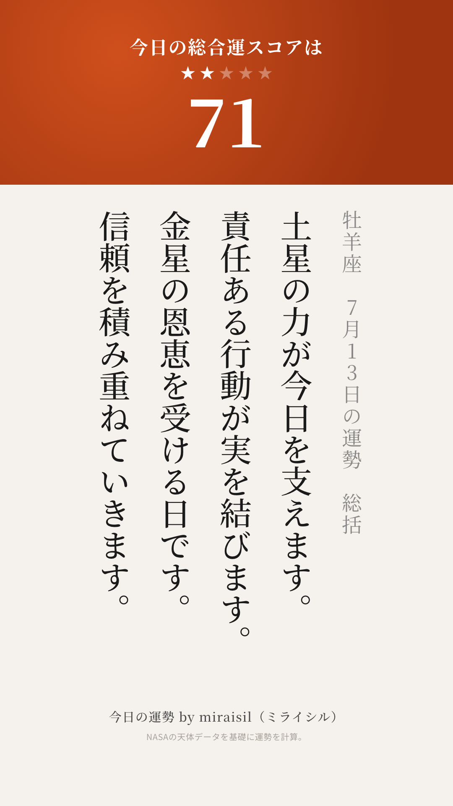
牡羊座 71
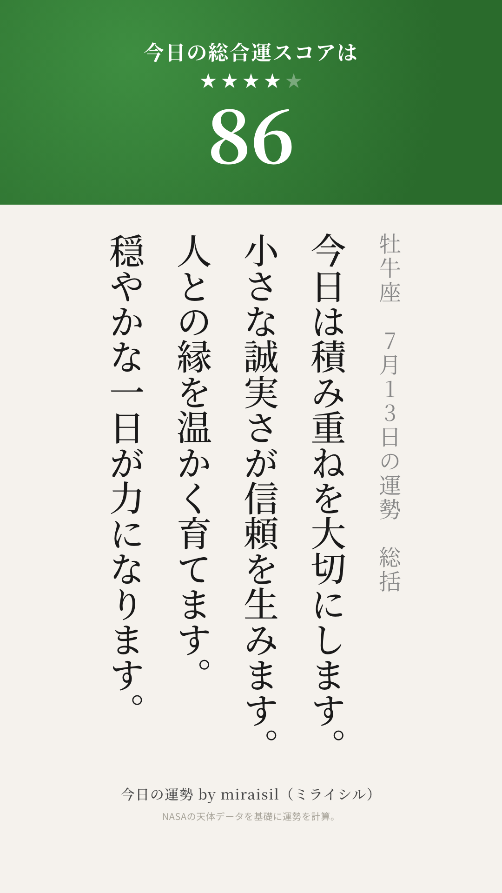
牡牛座 86
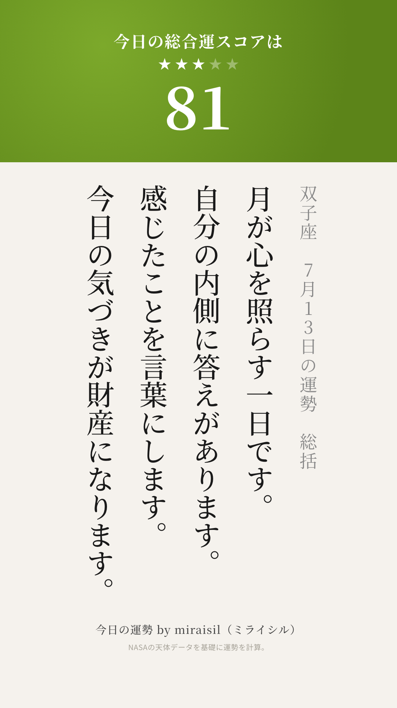
双子座 81
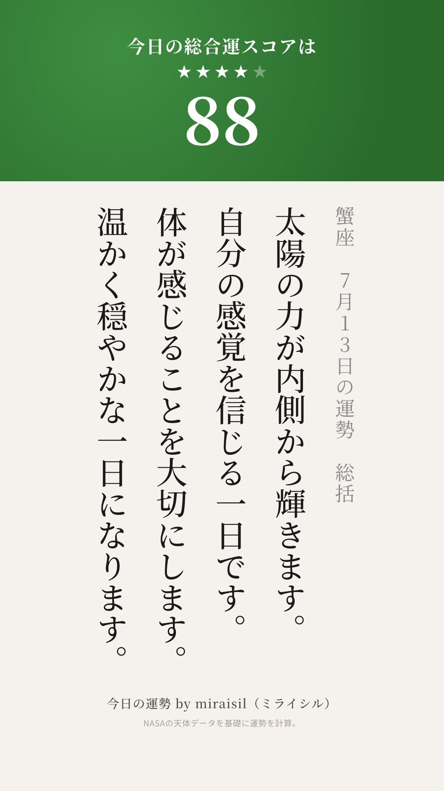
蟹座 88
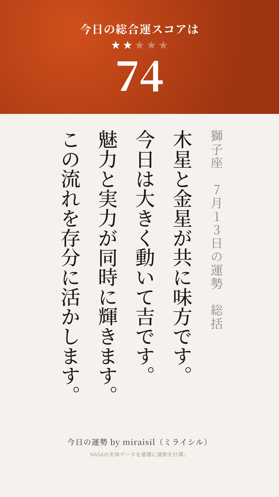
獅子座 74
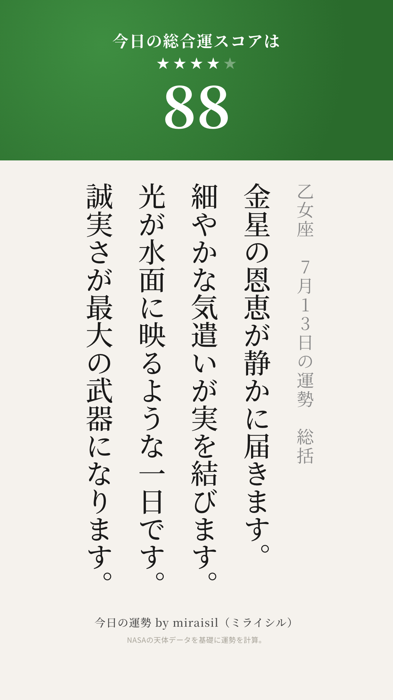
乙女座 88
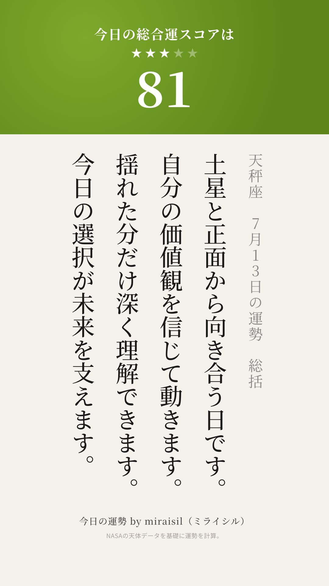
天秤座 81
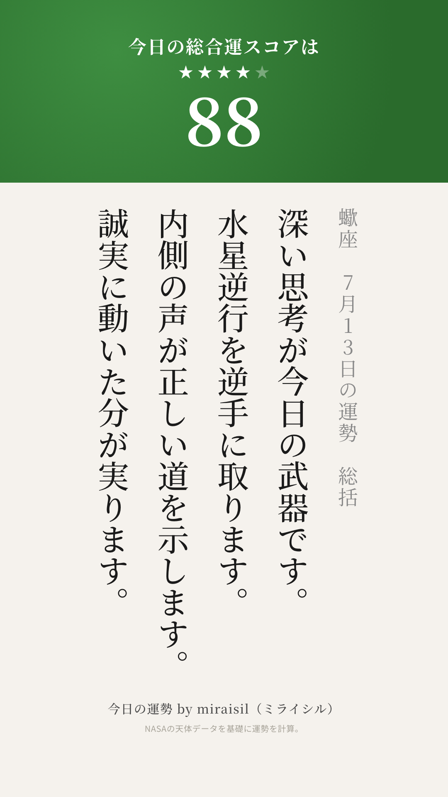
蠍座 88
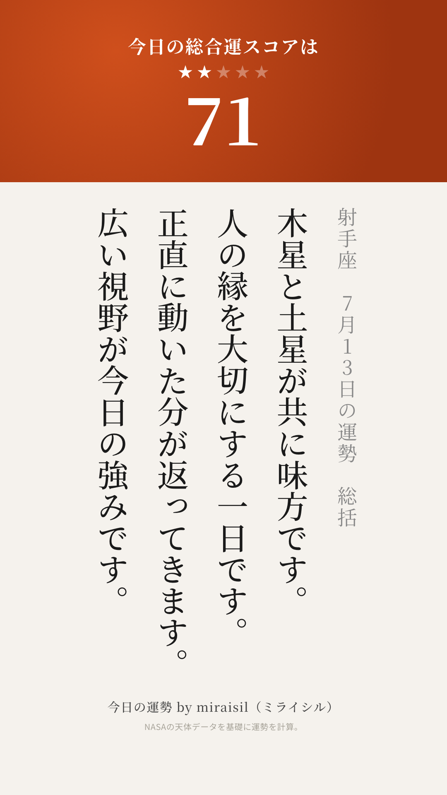
射手座 71
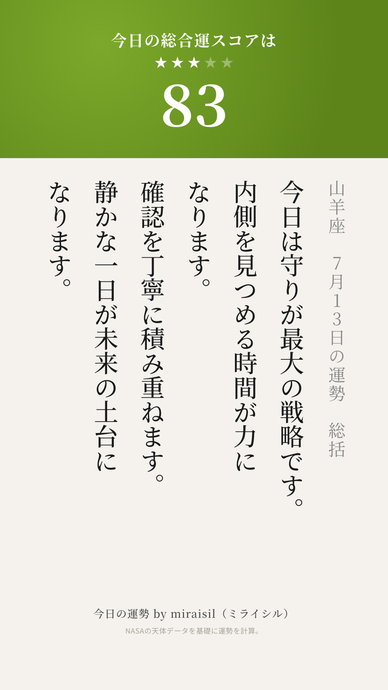
山羊座 83
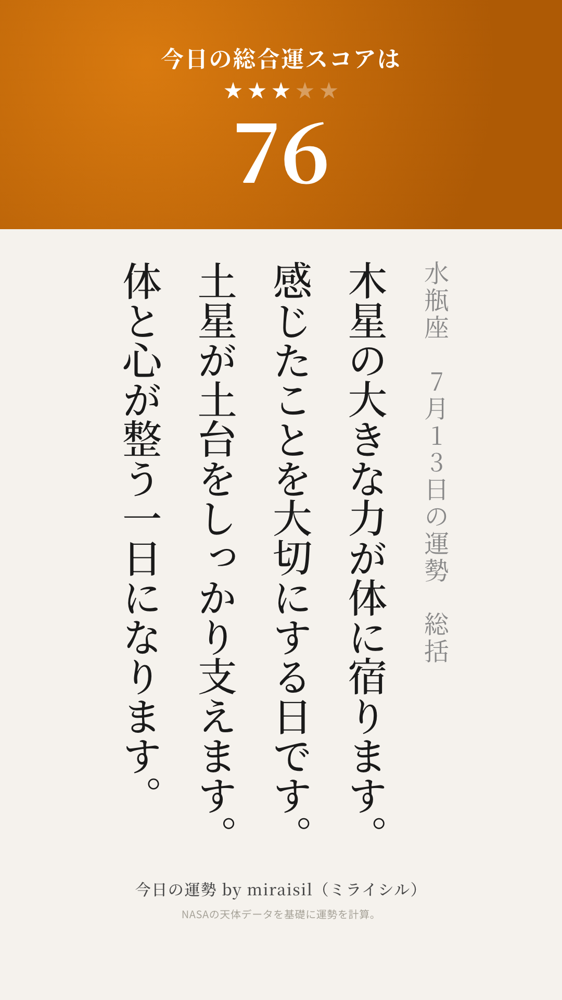
水瓶座 76
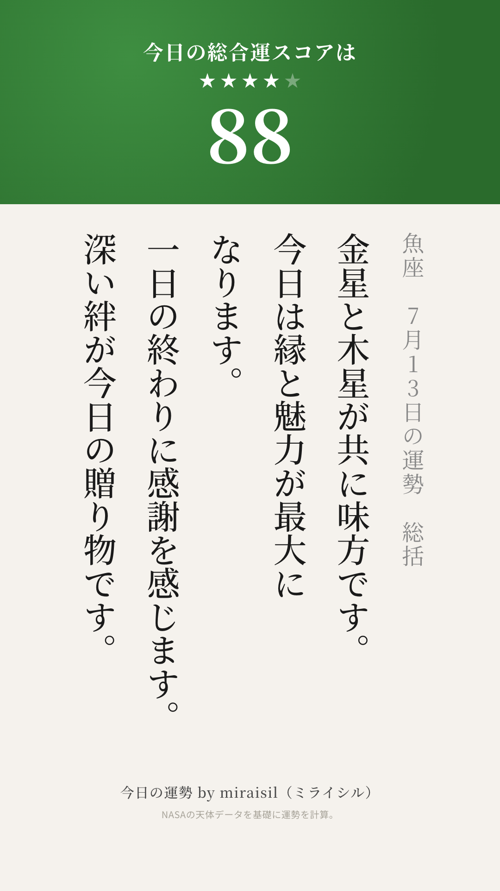
魚座 88
本日の帯分布: 70-74帯×3 75-79帯×1 80-84帯×3 85-89帯×5 (4帯使用)
※ゴールド帯(95+)・65-69帯・90-94帯は本日は非出現（30日平均ではゴールド4.7%程度で出現する設計）